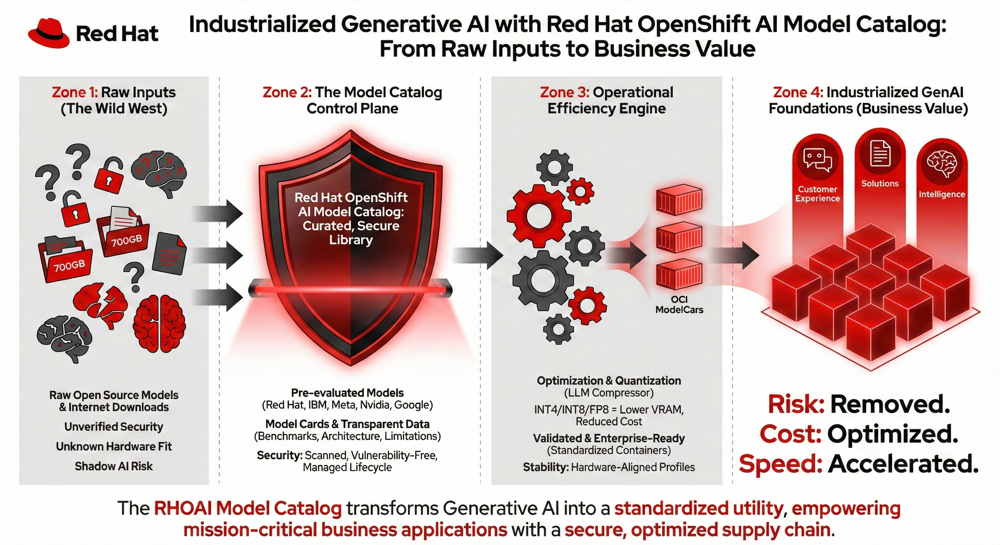

Making the RHOAI Model Catalog Work for You
From Showroom to Production: Operationalizing the OpenShift AI Model Catalog
Reduce guesswork. Optimize hardware. Deploy with confidence.
In the enterprise AI landscape, the challenge is no longer just finding a generative AI model—it is ensuring that model is safe, performant, cost-effective, and easily accessible to your internal teams.
To understand the architecture of OpenShift AI, you must distinguish between two highly complementary components: the Model Registry and the Model Catalog.
-
A Model Registry acts as your central repository and governance layer. It is where administrators and engineers version, track, and manage the complete lifecycle of ML models from development to deployment. Think of it as the "Title Office" for your AI assets.
-
The Model Catalog, conversely, is the "Showroom." It provides a curated, centralized library where data scientists and AI engineers can discover, evaluate, and ultimately select the models they want to register and deploy.
The core business value of the catalog lies in reducing the time, cost, and operational risk associated with GenAI deployments through four key pillars.

1. Validated & Enterprise-Ready (Mitigating "Shadow AI")
Deploying raw, community-sourced models introduces severe "Shadow AI" risks, from malicious code to unsupported architectures. OpenShift AI provides a default catalog featuring models from providers like Red Hat, IBM, Meta, and Google.
Models carrying the Red Hat Validated badge offer a secure supply chain. They are benchmarked for performance and quality using open-source evaluation datasets. Because they are packaged in standardized OCI formats (ModelCars), they integrate seamlessly into managed software lifecycles, bypassing the integration hurdles of untested open-source models.
2. Custom Model Integration (Your Private Showroom)
The Model Catalog is not a walled garden limited to Red Hat content. It is a flexible portal designed to expose your organization’s unique AI assets.
Administrators can configure custom model catalog sources to expose fine-tuned or proprietary models. Whether these custom models are hosted in external storage locations (like secure S3 buckets) or are being pulled in alongside your Model Registry, the catalog standardizes their discovery. They appear in the catalog under specific labels or in an "Other models" category, allowing you to provide your data scientists with a single, unified interface for both trusted third-party foundation models and your own proprietary assets.
3. Optimization & Quantization (Controlling TCO)
Hardware availability is the primary constraint for GenAI. The catalog addresses this by offering models optimized via advanced quantization techniques.
By compressing model weights into lower-precision formats (like INT4, INT8, and FP8 Dynamic), the catalog allows massive models to run on fewer or less expensive hardware accelerators. These optimizations maintain accuracy while significantly increasing inference speed, directly lowering your Total Cost of Ownership (TCO) per token.
4. Transparency via Performance Insights
To eliminate the "black box" of AI performance, the catalog provides deep visibility into how a model will behave on your specific infrastructure before you deploy it.
For validated models, engineers can access the Performance Insights tab to view benchmark data for specific hardware configurations. This allows for highly accurate capacity planning and hardware sizing by filtering and analyzing:
-
E2E (End-to-End Request Latency): The total time taken from submitting the request to receiving the final response.
-
TTFT (Time to First Token): The critical wait time before a user sees the first output from the model.
-
TPS (Tokens Per Second): The total number of tokens output per second, dictating overall throughput.
-
ITL (Inter-Token Latency): The average time between consecutive tokens.
Engineers can set their maximum acceptable latency or minimum requests per second (RPS) to immediately hide hardware configurations that will not meet their Service Level Agreements (SLAs).
Your Mission: Operationalize the Catalog
In this module, you will move beyond simply browsing models. You will learn to use the catalog as a tool for architectural decision-making and supply chain management.
You will execute the following workflow:
-
Test Drive (Simulation): Navigate the UI to interpret Performance Insights, size hardware requirements, and explore deployment strategies (such as Rolling updates vs. Recreate).
-
Extend the Supply Chain (Lab): Take on the role of a Platform Engineer to inject a Custom Private Source into the catalog, making your organization’s fine-tuned models from external storage discoverable alongside validated content.
Ready to explore? Let’s start by looking at the architecture that makes this possible.